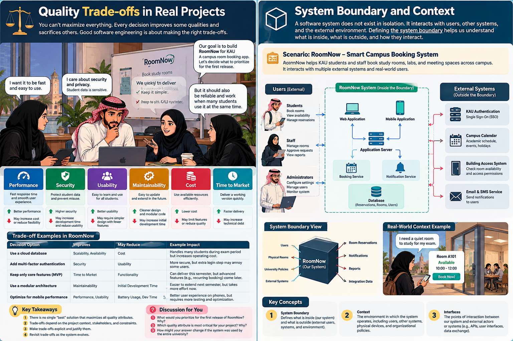
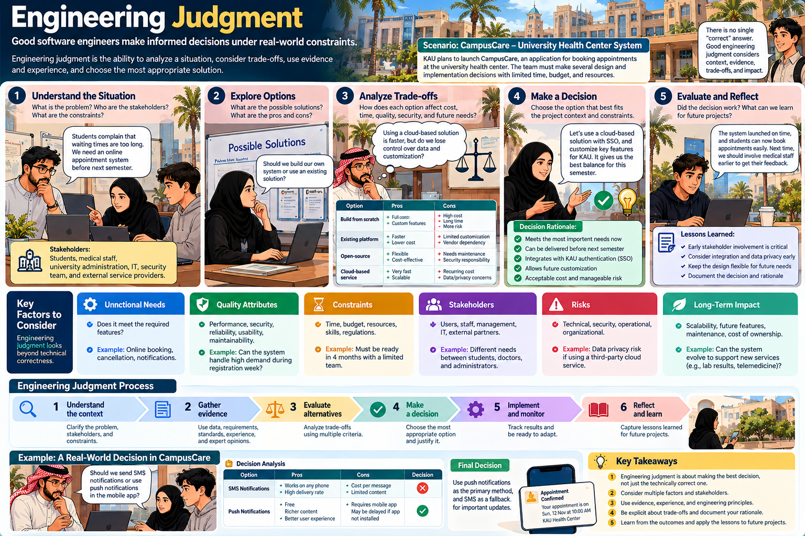

Explain what changes beyond code
Read now: the opening puzzle, professional software and the discipline comparison.
Produce: two responsibilities beyond correct implementation, each linked to an affected stakeholder.
Start meeting 1 →Build on your programming skills: engineer software that people can trust, teams can change, and organizations can sustain. Connect implementation with users, quality, evidence and responsibility throughout the software life cycle.
Your evidence of learning: produce one short engineering decision that connects a symptom, a plausible cause, an affected stakeholder, a proportionate response and a verification check. The workshop and exit response provide practice; the M0 bridge transfers the reasoning to your project.
Choose your current meeting below. Each path names the essential reading and the evidence you will produce. Use the remaining sections as an independent study reference.
Read now: the opening puzzle, professional software and the discipline comparison.
Produce: two responsibilities beyond correct implementation, each linked to an affected stakeholder.
Start meeting 1 →Read now: quality, the worked RoomNow decision and four recurring process activities.
Produce: one quality trade-off and an observable check that could support or challenge it.
Start meeting 2 →Read now: system boundaries and ethics; complete the foundation workshop.
Produce: two team risk decisions, then a three-sentence individual CampusCare response.
Start meeting 3 →Read after class: diversity and engineering challenges provide context. Finish the six CampusCare transfer prompts and five practice questions independently. Project bridge: draft M0 reasoning for Week 3; QC1 is completed on Blackboard when released.
Assessment distinction: Foundation Workshop is ungraded. The five questions later on this page are ungraded practice. The official Quick Check 1 is individual and graded in Blackboard. Studio 1: Team Workflow takes place in Unit 02, Week 2; this foundation workshop is not one of the six formal Studios.
| Meeting | In-class sequence | Independent reading / evidence |
|---|---|---|
| 1 · Professional product | 5 min opening response; 12 min RoomNow and product scope; 12 min SE/CS/systems distinction; 16 min stakeholder reasoning; 5 min exit response. | Read professional software and the three-discipline comparison. Exit: explain two responsibilities beyond implementation. |
| 2 · Quality and process | 5 min retrieval; 12 min quality attributes; 13 min worked decision; 12 min four recurring activities; 5 min paired application; 3 min exit response. | Read diversity and engineering challenges; use them as context, not four additional lecture topics. Exit: one trade-off and a measurable check. |
| 3 · Responsibility and application | 7 min boundary/SSO; 8 min ethics; 5 min evidence briefing; 22 min Foundation Workshop; 6 min M0 bridge; 2 min individual exit response. | Finish the CampusCare transfer prompts independently; attempt the five practice questions. QC1 remains 2 marks on Blackboard when released; M0 remains due Week 3. |
If preparation is incomplete: use the opening retrieval to identify one missing idea, model it briefly, and reduce optional examples. Preserve individual diagnosis and feedback; do not attempt to read the whole reference aloud.
Two teams can write code that produces the same output today. One product survives five years of change; the other collapses after six months. What did the first team engineer that the second team did not?
KAU wants a campus room-booking service. A student prototype already books an available room. It works in a demo. The university now wants thousands of students and staff to use it, wants access rules, auditability, integration with identity systems, reliable availability during registration periods, and safe evolution when policies change.
Follow the same feature from a working prototype to an accountable university service. At each stage, ask what changed, which risk emerged and what evidence would justify a decision.
Search and booking succeed in a demonstration. This proves a narrow behavior, not reliability under university-wide demand.
Representative users, peak load, conflicting bookings, change effort and failure handling.
Facilities defines room policies; university identity supplies authentication; students expect usable booking.
RoomNow owns booking rules and graceful response to SSO failure; the identity provider owns authentication service operation. External dependency does not remove RoomNow accountability for its own behavior.
A conflict appears during registration week. A successful happy-path demo never tested overlapping requests.
Specify the conflict rule → develop an appropriate control → validate conflicting and concurrent requests → evolve the rule when policy changes.
Stronger authentication may add friction. Compare alternatives against policy, threat severity, user needs and testable evidence.
State stakeholders, alternatives, constraints, trade-offs, evidence and remaining risk. Do not simply maximize one quality attribute.
Sommerville begins with a crucial boundary: software engineering is aimed at professional software development—software developed for use by others, commonly produced and evolved by teams rather than remaining a private one-person program.
A personal program can succeed when it solves its author's immediate problem. Professional software has a different burden. Other people must install it, operate it, trust it, support it, modify it, diagnose failures, and understand enough of its behavior to make decisions. That means the deliverable is not merely executable code. It includes the information and configuration needed to make the code useful over time.
Code executes inside a technical environment, but professional software also lives inside an organization. Policies determine who may do what. Users bring different goals and abilities. Operators need observability and recovery. Managers face budget and schedule constraints. Regulators may impose legal duties. A technically elegant program can therefore be a poor software product if it ignores its operating context.
Sommerville distinguishes generic products, whose specification is controlled by the product developer, from customized (bespoke) software commissioned for a particular customer, where the customer has stronger control over the specification. Modern products often blur the boundary: a general platform may be configured or extended for a particular organization. The distinction matters because it changes who controls requirements, priorities, release timing, and acceptable trade-offs.
The prototype works for 20 students. Before approving campus-wide use, what would you investigate beyond the code itself?
Is RoomNow generic, customized, or hybrid if the team builds a reusable booking platform but KAU configures identity rules, room policies, and reporting? Defend your answer by discussing who controls the specification.
Software engineering is not “programming with more documents.” It is an engineering discipline concerned with the whole production and evolution of software, using systematic practices while adapting them to context.
The engineering mindset changes the unit of success. A programmer can ask, “Can I implement this algorithm?” A software engineer must also ask: What problem are we solving? What constraints matter? How will we know the solution is acceptable? How will other engineers change it? What evidence gives us confidence? What trade-offs are justified under the available time and budget?
Work is organized so decisions and changes can be understood, repeated, reviewed and improved.
Engineering does not mean blindly applying every method. Appropriate methods depend on system type, risk, team and constraints.
Claims such as “secure,” “correct,” or “ready” need evidence: reviews, tests, traceability, measurements or justified analysis.
Engineers work within cost, schedule, technology, organizational and regulatory limits; perfection is not the objective.
Build on programming, do not dismiss it. Professional programmers also consider users, quality and tests. The distinction concerns the scope of responsibility, not two mutually exclusive job types. Software engineering connects these concerns across the product life cycle and coordinated team work.
Computer science supplies theories, abstractions, algorithms, data structures and computational foundations. Software engineering draws on those foundations but focuses on the practical problem of producing useful software under real constraints. The disciplines overlap; they answer different kinds of questions. Knowing the best algorithm does not automatically tell a team how to elicit conflicting requirements, organize changes, verify releases, or manage risk across years of evolution.
A software-intensive system may include hardware, people, procedures, physical devices, policies, networks and external organizations. Systems engineering reasons about the successful whole across its life cycle; software engineering focuses on the software contribution to that whole. The boundary matters because a “software problem” may actually be caused by a policy, process, hardware or human-interface issue.
Correct functionality is necessary, but professional quality is broader. Sommerville highlights maintainability, dependability/security, efficiency and acceptability as essential characteristics.
Can the software evolve when needs, policies, technologies and defects change?
Can users rely on the system, and can it resist harmful failure or malicious access?
Does it use time, computing resources and capacity responsibly while meeting performance needs?
Is it understandable, usable and compatible with the environment and users for whom it is intended?
Quality attributes are contextual. The “most important” quality depends on what can go wrong and what stakeholders value. A game that pauses for 300 ms may feel annoying; a medical control system that responds too late may be dangerous. A campus booking service may prioritize availability during peak registration, privacy of user information, accessibility, and maintainability as policies change.

RoomNow grows from a booking prototype into a campus service. Students and facilities staff have different needs; university identity is an external dependency. Evaluate conflicting bookings, reliability, security and usability together, define what RoomNow owns, and justify each trade-off with evidence.
The illustration is unavailable. This description provides the learning context.
Conditional examples: a cloud database does not automatically guarantee availability, and MFA does not always produce the same usability cost. Compare the actual service guarantees, threats, user needs, failure behavior and total cost. Security and privacy are related but distinct concerns.
Text clarification: the scenario is RoomNow; incidental lettering errors in the original artwork do not introduce a different system. Its context sketch combines boundary and internal component views. For this unit, identify ownership and external dependencies; detailed architecture is taught later.
Engineering rarely optimizes every quality simultaneously. Stronger security controls may add friction. Replication can improve availability but complicate consistency and privacy. Rich logging helps diagnosis but may increase storage cost and expose sensitive data if handled poorly. Engineering judgment is the disciplined process of making such trade-offs visible, justified and verifiable.
Peak demand is growing. Would you optimize speed first, strengthen controls first, or change the design? What evidence would justify your priority?
The team can add aggressive caching to improve response time, but room availability may be stale for up to 30 seconds. Is that acceptable? Your answer must identify stakeholders, consequence of stale data, alternative controls, and evidence needed before release.
Teaching fixture, not real university incident data: two users receive booking confirmations for room A101 at the same time. A screenshot alone shows a symptom; it does not prove whether the fault is stale availability, missing conflict protection, or a misleading confirmation.
“Use a better database and add testing.”
Names tools without a causal explanation, stakeholder impact or success criterion.
“Test simultaneous bookings because students may receive conflicting confirmations.”
Connects the symptom with impact, but does not explain the control or what to observe.
“Inspect confirmation and saved-reservation records first. If both requests were accepted, enforce one successful reservation per room/time slot and return a clear rejection to the other user. Reproduce simultaneous requests and compare replies with saved records.”
Check: exactly one accepted booking, one stored reservation and an honest outcome for every request. A single passing test increases confidence; it does not prove the system is reliable under every load.
Decision boundary: cached availability may support browsing, but the final booking must check authoritative state. Faster browsing alone cannot justify duplicate confirmed bookings. Implementation details come later; here you must state the behavior and evidence.
New observation: university SSO is unavailable; RoomNow still displays “booking confirmed” after sign-in fails. Write one affected stakeholder, one risk, one response and one observable check.
Students may wrongly believe they have a reservation. Keep RoomNow’s authentication dependency explicit: do not report success without an authorized, saved booking. Show an honest sign-in-unavailable message and follow the recovery policy. Simulate SSO failure and verify no unauthorized booking is created and no success message is displayed.
A software process organizes the activities that transform a need into useful software and then keep that software useful as the world changes.
Sommerville identifies four fundamental activities that appear in all software processes, although different methods organize them differently. This is more useful than memorizing one lifecycle diagram because it exposes the engineering purpose underneath different process models.
Do not interpret this as “finish specification forever, then code, then test once.” In iterative development, specification, development and validation can recur in small cycles. Evolution begins as soon as a useful system meets a changing world. Unit 02 will examine process models and Agile workflow in depth; here the goal is to recognize the invariant engineering purposes.
After the first pilot, students ask for group bookings and facilities changes room rules. Which activities must repeat, and what evidence should be updated?
A defining lesson in Sommerville’s introduction is software engineering diversity: methods must fit the application, risk, organization and people.
Different systems fail in different ways. That changes what evidence is necessary and what development approach is sensible. A mobile social app can learn from frequent deployment and usage feedback. An embedded safety controller may demand much stronger up-front analysis, verification and controlled change. A data-processing system may emphasize integrity and throughput. A distributed service may emphasize availability, security and observability.
Rapid feedback, usability, security, data integrity, scalable service behavior.
Hardware interaction, timing, safety, limited resources, expensive field changes.
Reliability, environmental constraints, remote operation, recovery and maintainability.
Integration, replaceable services, diverse users, interoperability and evolution.
Classification note: These four examples are selected teaching contexts, not an exhaustive or verbatim textbook classification. An integrated learning environment illustrates cooperating services and systems. Suitable methods differ, but alternatives that violate mandatory constraints are not equally acceptable.
Even when methods differ, professional software still needs a managed and understood process, appropriate dependability/performance, understanding and management of requirements, and effective use of existing resources. The form changes; the engineering obligation remains.
Would you engineer RoomNow the same way as a safety-critical medical controller? Identify which risks and evidence requirements change—and which engineering fundamentals remain.
Compare “send an alert” in (A) a social app and (B) an insulin-delivery system. Identify how the required evidence, tolerance for failure, release process, and verification strategy should differ. Avoid saying only “B is more important”—explain what engineering practices change.
Software exists inside a larger system of people, devices, services, organizations and rules. Many failures occur at the boundaries between these parts.
A useful system-context view prevents premature coding. If identity is external, what happens when the identity service is unavailable? If room data comes from another department, who owns correctness? If policies differ by room type, where are rules defined? If a booking affects physical access, is “booking success” enough, or must door-access systems also agree?
KAU Identity goes offline for ten minutes. Which responsibility belongs to RoomNow, which belongs outside it, and what behavior should users see?
Systems thinking asks what belongs inside the software boundary, what belongs outside it, and what assumptions connect them. This is not detailed architecture yet. It is disciplined awareness that the software cannot be judged independently from the environment in which it creates value.
Before M0, each team should be able to state the problem, intended users, key external actors/systems, 3–5 meaningful capabilities, and the most important quality concern. These are hypotheses to refine—not a frozen specification.
The textbook identifies recurring pressures—heterogeneity, rapid business/social change, security and trust, and scale. Modern practice adds faster delivery and continuous integration of change, but the underlying problem is the same: complexity keeps moving.
Different devices, platforms, services, languages, legacy systems and networks must cooperate.
Organizations, regulations, markets and user expectations evolve faster than long release cycles.
Software mediates sensitive activity; failures and attacks can affect people, money, privacy and institutions.
Engineering must work from tiny embedded devices to globally distributed services and large teams.
A small codebase can be hard to engineer when it coordinates many stakeholders or external systems. Conversely, a large codebase can be manageable when boundaries, ownership, tests and interfaces are disciplined. Engineering reduces uncontrolled complexity by making important relationships visible and changes reviewable.
Software engineers can enable benefit or cause harm. Technical competence does not remove responsibility for how systems affect clients, colleagues, users and the public.
Sommerville highlights four practical areas of professional responsibility: confidentiality, competence, intellectual property rights, and computer misuse. These are useful because they turn “ethics” from an abstract slogan into decisions engineers encounter in ordinary work.
Real dilemmas are rarely “good versus evil.” Confidentiality may conflict with public safety. Delivery pressure may conflict with adequate validation. Loyalty to a team may conflict with reporting a serious defect. Professional judgment requires identifying affected parties, possible harms, obligations, evidence, alternatives and escalation paths—not simply choosing the fastest technical action.
The easiest solution is not necessarily the best one. What alternatives, constraints and evidence must the team compare before deciding?
RoomNow is scheduled for launch tomorrow. The team discovers that administrator changes to room permissions are not reliably logged. The product manager says no student can see the log anyway, so the defect is invisible. What should the engineer do?
If schedule pressure conflicts with traceability and accountability, what is your professional obligation—and how would you escalate the risk?

CampusCare connects students with university health-center services. Sensitive information, university identity, peak demand and changing policies shape the decision. Identify stakeholders and boundaries, gather evidence, compare alternatives and trade-offs, explain the rationale, then monitor and learn.
The illustration is unavailable. This description provides the learning context.
| Dimension | Compare | Evidence to collect |
|---|---|---|
| Acquisition | Build a tailored solution / adapt an existing platform | Required capabilities, integration effort, skills, change cost |
| Licensing and support | Open-source / proprietary components | License obligations, maintenance ownership, support and security response |
| Hosting and operation | University-managed / externally hosted service | Approved data handling, availability and recovery commitments, total cost |
The pictured cloud choice is a hypothesis, not a proven recommendation. It is defensible only if institutional approval, integration tests, recovery evidence and a cost comparison support it. If a mandatory privacy constraint is not met, speed does not make that option acceptable.
Notifications: SMS and push are possible delivery channels, not guarantees that a person received a message. Compare reach, user consent, delivery evidence and an appropriate fallback. Keep health details out of notification previews.
Explain this chain in your own words without looking back:
A 22-minute formative workshop in Week 1, Meeting 3. This is NOT Studio 1 of the six formal Studios; that starts in Unit 02. Work first independently, then in a team. Carry evidence into M0.
A campus service was delivered on time and passed its demonstration. Three months later, users no longer trust it: data occasionally disappears, policy changes require risky edits across unrelated files, support staff cannot reproduce incidents, and only one developer understands deployment.
These are fictional teaching observations. Use them to test hypotheses; none alone proves a root cause.
Unknown: whether the missing records were never saved, were deleted later, or belong to a different environment. Ask for correlated records and reproduction evidence before claiming “database failure.”
Individually write one observable symptom, one possible root cause, and one question that would test your assumption. No discussion yet.
In teams of 4–6, assign facilitator, evidence recorder, skeptic and spokesperson (roles may rotate). Compare hypotheses and classify weaknesses by quality, process, context or responsibility. Distinguish evidence from guesses.
Choose two risks by likely impact and exposure. For each, propose a concrete practice and an observable way to verify whether the risk decreases.
Each team gives a 60-second diagnosis to a neighboring team, then receives a 60-second challenge to one assumption. The instructor samples two responses for a brief shared debrief; this is not a presentation from every team.
Use one compact sentence per field. Success criteria: supported observation, plausible cause with uncertainty, concrete user impact, proportionate response and observable verification. Feedback uses these five criteria; no grade is assigned. Notes are lost on reload: download before leaving.
Model for E1: confirmed reservations are missing after restart; persistence or environment mismatch is a hypothesis, not a proven defect. Students lose trust and room access. Correlate confirmation IDs with saved records, reproduce the restart, and check that every accepted booking remains retrievable in the intended environment.
Acceptable alternatives: prioritize E2 if change risk is justified, or E3 if recovery exposure is justified. Do not require the same tool or priority from every team.
| Criterion | Not yet convincing | Convincing evidence |
|---|---|---|
| Observation | General complaint or invented fact | Specific symptom linked to E1, E2 or E3 |
| Reasoning | Assumption stated as proven cause | Plausible hypothesis plus a check or uncertainty |
| Impact | “Bad quality” without affected people | Named stakeholder and concrete consequence |
| Response | Unexplained tool prescription | Practice proportionate to the identified risk |
| Verification | “Test it” or “make it secure” | Observable result that would support or challenge the decision |
Feedback in one sentence: “Your symptom is supported by E2; strengthen the answer by stating what the regression check must observe.” Sample two teams and use peer feedback for the rest.
M0 readiness: the student can connect a real problem to stakeholders, a dependency, one quality risk and a future evidence check. These are draft hypotheses, not a new graded deliverable or a frozen specification.
Before M0, write a one-paragraph problem statement and identify primary users, two additional stakeholders, one external dependency, one critical quality attribute, one trust-threatening failure, and one form of evidence your team will eventually need. These become early project hypotheses to refine.
Five ungraded practice questions. Make a first attempt before viewing the correct answer and explanation. The official individual graded Quick Check 1 is delivered separately in Blackboard.
This is ungraded practice.
KAU plans CampusCare, an appointment service connecting students with university health-center services. It must handle sensitive information, integrate with university identity, support peak demand, and remain usable when services or policies change.
In class · 2 minutes: name one affected stakeholder, one important risk and one observable check in three sentences. Independent transfer · allow 8–10 minutes: complete the six prompts below; this is ungraded practice, not an additional Challenge.
1. Name a stakeholder and a concrete consequence. 2. Explain the risk and one uncertainty. 3. Specify what you would observe to judge the response. Write before opening the feedback below.
Ungraded practice. Your text is lost on reload; download or copy it before leaving.
Stakeholder: did you identify a person or group and a specific consequence, rather than just name a feature?
Risk: did you explain why the outcome matters and distinguish an assumption from an established fact?
Evidence: could someone observe the check and use its result to support or challenge your decision?
Example to compare after writing: Students may miss care if an appointment appears confirmed but is not saved. A restart-related persistence failure is a hypothesis; the scenario does not establish the cause. Compare confirmation identifiers with retrievable appointment records before and after a controlled restart, then investigate any mismatch.
Different priorities can be justified. Revise the weakest sentence in your own answer; do not replace it with the example.
RoomNow, CampusCare and the evidence fixtures are locally authored teaching adaptations; their hypothetical decisions are not recommendations from the references. Author’s chapter presentations (new tab) · IEEE SWEBOK resource (new tab).
Reading target for this unit: Sommerville 10e, Chapter 1, with emphasis on §1.1 Professional Software Development and §1.2 Software Engineering Ethics. Case studies in §1.3 provide transfer examples showing why engineering practice depends on system type.